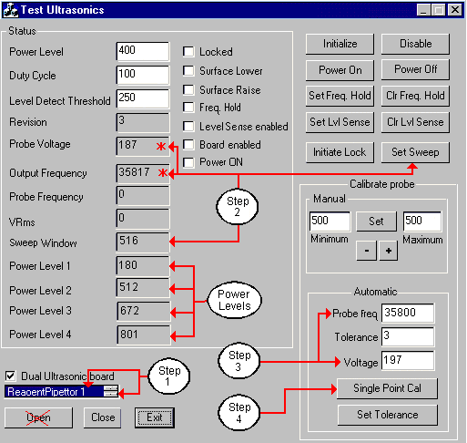

Using TestUltrasonic.exe
This procedure describes how to use TestUltrasonic.exe to adjust ultrasonics.
TestUltrasonic.exe is located in the C:\AU folder on the AU.

| Power Level | Expected |
|---|---|
| 1 | approximately 200 |
| 2 | approximately 500 to 600 |
| 3 | approximately 600 to 700 |
| 4 | approximately 700 to 800 |
-
Drain the tubing.
- From the Main Menu, select Diagnostics > Device Diagnostics > Digital Devices > Peristaltic and Vacuum Pumps.
- Enable the vacuum pump for the pipettor being serviced.
- Verify that the pipettor is directly over the wash tower.
-
Remove the fitting from the pipettor precision pump and allow the wash buffer to drain into the wash tower.
Caution: When draining wash buffer from the tubing, do not let fluid leak onto the instrument or any of the instrument components. When disconnecting the tubing, hold a dry towel at the in-line fitting.
- After the tubing is drained, disable the vacuum pump and exit the Digital Devices screen.
-
Open a connection between the console PC and the AU.
For Windows XP:
-
Press the
[Windows] key, and then select
Start
> Programs > Administrative Tools > Remote Desktop Connection to AU PC to start desktop sharing.
The remote desktop connects to the instrument computer and allows remote control of the instrument and applications. When connected, the Remote Desktop window displays the Windows XP desktop of the instrument.
-
To navigate the AU desktop:
- Use the scroll bars on the right and bottom of the window.
- Move down the scroll bar on the right to see the AU desktop toolbar,
- The PC toolbar is at the bottom of the screen.
-
To switch between the console PC display and the AU display:
- To return to the console PC display, use the minimize button at the top of the AUSETUPPC screen.
- To restore the AU Windows screen, select AUSETUPPC Remote Desktop Connection in the toolbar at the bottom of the console PC display.
For Windows 8:
-
Press the
Windows key, type
remote, and open the Remote Desktop Connection program.
The remote desktop connects to the instrument computer and allows remote control of the instrument and applications. When connected, the Remote Desktop window displays the Windows 8 desktop of the instrument.
- Type in 192.168.2.4 into the Computer field and select Connect.
- Enter user for User Name and tech for the password if prompted.
-
If prompted at the RDS warning screen, check the box for "Don't ask me again for connections to this computer" and select
Yes.
Note: For Windows 8, the default console IP address is 192.168.2.3 and the AU IP address is 192.168.2.4. Neither IP address changes during the software load process.
-
To switch between the console PC display and the AU display:
- To return to the console PC display, use the minimize button at the top of the AU Desktop screen.
- To restore the AU Desktop screen, press the Windows key, type remote, and open the Remote Desktop Connection program.
-
Press the
[Windows] key, and then select
Start
> Programs > Administrative Tools > Remote Desktop Connection to AU PC to start desktop sharing.
-
Prepare for the ultrasonics adjustment.
For Windows XP AU with Software 5.2 and below:
- Right-click on the AU application icon located on the task bar (large Y icon), and select Exit to exit the AU application.
- Select Start > All Programs > Windows Explorer or double-click the Windows Explorer icon on the desktop to open Windows Explorer.
- Navigate to the C:\AU folder.
- Locate and open TestUltrasonic.exe.
For Windows 8 AU with Software 5.3.1 and above:
-
Shut down the AU Object program.
- Right click on the task bar and select Task Manager.
- In the Task Manager box, click on Processes, select AUobj Module, and click on End Task in the bottom corner of the box.
- Navigate to Computer > Local Disk (C:) or AU_PC > AU.
- Locate and open TestUltrasonic.exe.
-
Adjust ultrasonics using TestUltrasonic.exe.
Caution: Perform these steps precisely as listed to ensure the TestUltrasonic.exe program functions correctly.
-
Use the arrow keys next to the reagent pipettor list to display the desired pipettor, and then left-click on the pipettor display to highlight the selection.
Caution:
- Do not left-click more than once on the pipettor display.
- Do not select the Open button.
-
Select the
Set Sweep button.
Note:
- The Sweep window should be between 500 and 1000.
- If the Set Sweep failed, then the Sweep window displays a large and erratic number.
- During Set Sweep, the Probe Voltage and Output Frequency Status windows seem to be locked. When Set Sweep is finished, these numbers begin to drop steadily and are the only indication that Set Sweep is finished.
-
In the automatic section of the Test Ultrasonics screen (bottom right), set:
- Voltage to 197.
- Probe frequency (depends on the transducer version):
- CnS transducer to 36200.
- Non-CnS transducer to the setting from the label on the pipettor gantry.
- Select the Single Point Cal button to start the adjustment.
-
Select
OK at the
Power Levels popup window.
Note: During the single point cal function, the Probe Voltage and Output Frequency Status windows seem to be locked. When the single point cal function is finished, these numbers begin to drop steadily and the Power Level 4 windows are updated. These changes are the only indications that the single point cal function is finished.
- Exit the TestUltrasonic.exe screen when finished.
-
Use the arrow keys next to the reagent pipettor list to display the desired pipettor, and then left-click on the pipettor display to highlight the selection.
-
Close the desktop sharing connection.
For Windows XP:
- From the AU Desktop, select Start > Disconnect or select the X in the upper right corner.
- Select OK at the Disconnect Windows Session pop-up.
For Windows 8:
- From the AU Desktop, right click on Remote Desktop Connection icon on the upper left corner or on the task bar > Close or select the X in the upper right corner.
- Select OK at the Your remote session will be disconnected pop-up.
-
Always perform the following steps after successfully adjusting the ultrasonics from the TestUltrasonics.exe program.
-
Relaunch the AU (double-click on the desktop shortcut).
Caution: Confirm that pipettor tubing has been reconnected after draining.
- Confirm that all pipettors are enabled in the Supplies screen.
-
Navigate to the Ultrasonics Adjustment screen and perform the adjustment on the desired pipettors.
Caution: Confirm that the pipettor tubing is drained before the adjustment. The tubing will contain buffer after relaunching the AU.
-
Relaunch the AU (double-click on the desktop shortcut).